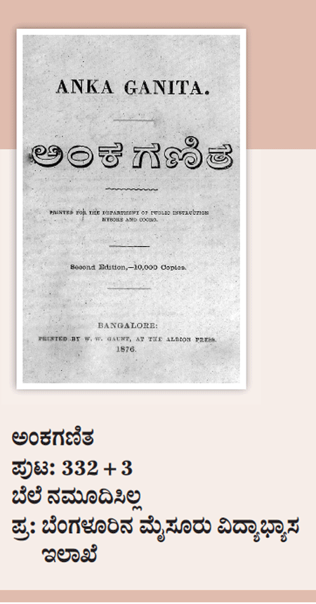

ಅಂಕಗಣಿತ
‘ಅಂಕಗಣಿತ’ ಅನೇಕ ವಿರಳ ಮಾಹಿತಿಗಳನ್ನು ಒಳಗೊಂಡಿರುವ ಒಂದು ಅಪರೂಪದ ಕೃತಿ. ಇದರ ಮೊದಲ ಆವೃತ್ತಿ ಯಾವಾಗ ಪ್ರಕಟವಾಯಿತು ಎನ್ನುವುದು ತಿಳಿದಿಲ್ಲ. ಎರಡನೇ ಆವೃತ್ತಿಯನ್ನು ಬೆಂಗಳೂರಿನ ದಿ ಆಲ್ಬಿಯನ್ ಪ್ರೆಸ್ನಲ್ಲಿ 1876ರಲ್ಲಿ ಮುದ್ರಿಸಲಾಗಿದೆ. ಇದರ ಮುದ್ರಕರಾದ ಡಬ್ಲ್ಯು.ಡಬ್ಲ್ಯು. ಗೌಂಟ್ ಅವರು 10,000 ಪ್ರತಿಗಳನ್ನು ಅಚ್ಚುಹಾಕಿಸಿರುತ್ತಾರೆ. 323+3 ಪುಟಗಳ ಈ ಕೃತಿಯ ಬೆಲೆಯನ್ನು ನಮೂದಿಸಲಾಗಿಲ್ಲ. ಇದರ ಪ್ರಕಾಶಕರಾದ ಬೆಂಗಳೂರಿನ ಮೈಸೂರು ವಿದ್ಯಾಭ್ಯಾಸ ಇಲಾಖೆಯು ಇದನ್ನು ಮೈಸೂರು ಮತ್ತು ಕೊಡಗು ಪ್ರಾಂತದ ವಿದ್ಯಾರ್ಥಿಗಳಿಗೆ ಪಠ್ಯವಾಗಿಟ್ಟಿದ್ದರು.
19ನೇ ಶತಮಾನದಲ್ಲಿ ಗಣಿತ ಶಾಸ್ತ್ರಕ್ಕೆ ಸಂಬಂಧಿಸಿದಂತೆ ಕನ್ನಡದಲ್ಲಿ ನೂರಕ್ಕೂ ಹೆಚ್ಚು ಕೃತಿಗಳು ಪ್ರಕಟವಾಗಿವೆ. ಅವುಗಳಲ್ಲಿ ಮೊದಲನೆಯದು 1858ರಲ್ಲಿ ಮಂಗಳೂರಿನ ಜರ್ಮನ್ ಮಿಷನ್ ಪ್ರೆಸ್ನಲ್ಲಿ ಅಚ್ಚಾದ ‘1 ಪೈಯಿಂದ 1000 ರುಪಾಯಿಯವರೆಗೆ 1 ದಿವಸದಿಂದ 100 ವರುಷ ಪರ್ಯಂತ 100ಕ್ಕೆ 12ರ ಪ್ರಕಾರ ಆಗುವ ಬಡ್ಡಿಯ ಪಟ್ಟಿಗಳು’ ಎನ್ನುವ ಅಪೂರ್ವ ಪುಸ್ತಕ. ನಂತರ 1871ರಲ್ಲಿ ಬಾಲಕೃಷ್ಣ ವೆಂಕಟೇಶ ಅಬ್ಬೀಗೇರಿ ಎನ್ನುವವರು ರಚಿಸಿದ ‘ಅಂಕಲಿಪಿ’. ಸದಾಶಿವ ಶಿವರಾಯ ಗಳತಗೀ ಅವರ ‘ಯೂಕ್ಲಿಡ್ ರೇಖಾಗಣಿತ’, ವೆಂಕಟ ರಂಗೋಕಟ್ಟಿ ಅವರ ‘ಬಾಯಿ ಲೆಕ್ಕಗಳ ಪುಸ್ತಕ’ ಹಾಗೂ ಧಾರವಾಡ ವೃತ್ತ ಪ್ರೆಸ್ನವರು ಪ್ರಕಟಿಸಿದ ‘ಅಂಕಗಣಿತ ಕೈಪಿಡಿ’ ಎನ್ನುವ 3 ಪುಸ್ತಕಗಳು 1872ರಲ್ಲಿ ಪ್ರಕಟಗೊಂಡಿವೆ.
1873ರಲ್ಲಿ ಪ್ರಕಾಶಗೊಂಡ ಚನ್ನಬಸಪ್ಪ ಬಸಲಿಂಗಪ್ಪಾ ಧಾರವಾಡಕರ ಅವರ ‘ಅಂಕಗಣಿತವು’, 1874ರ ಅದೇ ಲೇಖಕರ ‘ಅಂಕಗಣಿತ ಪ್ರಶ್ನಸಮೂಹವು’, ಮಿಸರ ಮಿಶ್ರೀಲಾಲರು 1876ರಲ್ಲಿ ರಚಿಸಿದ ‘ಕೋಷ್ಟಕ’ವು, 1877ರಲ್ಲಿ ಭಿಕಾಜಿ ಹರಿ ಸಾವಂತರು ಪ್ರಕಟಪಡಿಸಿದ ‘ಚಿಕ್ಕ ಹುಡುಗರಿಗೋಸ್ಕರ ಕೋಷ್ಟಕ’ವು ಹಾಗೂ ಹೆಡ್ಮಾಸ್ಟರ್ ಲಕ್ಷ್ಮೀಪತಯ್ಯ ಅವರು 1878ರಲ್ಲಿ 400 ಕಂದಪದ್ಯಗಳಲ್ಲಿ ರಚಿಸಿದ ‘ಗಣಿತಾರ್ಣವ’ (ಹಳತು-ಹೊನ್ನು, ಪ್ರಜಾವಾಣಿ-21, ನವಂಬರ್, 2010) ಎನ್ನುವ ಸುಮಾರು 10 ಪುಸ್ತಕಗಳು 1870ರ ದಶಕದಲ್ಲಿ ಕನ್ನಡದಲ್ಲಿ ಪ್ರಕಟಗೊಂಡಿರುವುದನ್ನು ನೋಡಿದರೆ ಗಣಿತಶಾಸ್ತ್ರವನ್ನು ಕುರಿತ ಕನ್ನಡಿಗರ ಆಸಕ್ತಿಯು ಗೊತ್ತಾಗುತ್ತದೆ. ಕ್ರಿ. ಶ. 1190ರಲ್ಲಿದ್ದ ಹಳಕನ್ನಡ ಕವಿ ರಾಜಾದಿತ್ಯ ಪ್ರಸಿದ್ಧ ಗಣಿತ ಶಾಸ್ತ್ರಜ್ಞನಾಗಿದ್ದನು. ತಿಮ್ಮರಸ (ಕಾಲ ಗೊತ್ತಿಲ್ಲ ) ಕೂಡ ಒಬ್ಬ ಹಳಗನ್ನಡ ಗಣಿತ ಶಾಸ್ತ್ರಜ್ಞ. ರಾಜಾದಿತ್ಯನು ವ್ಯವಹಾರ ಗಣಿತ, ಕ್ಷೇತ್ರ ಗಣಿತ, ವ್ಯವಹಾರ ರತ್ನ, ಲೀಲಾವತಿ, ಮತ್ತು ಜ್ಞಾನಗಣಿತ ಸೂತ್ರಾಧಿಕೋದಾಹರಣ ಎನ್ನುವ ಕೃತಿಗಳನ್ನು ರಚಿಸಿದ್ದಾನೆ.
ಶ್ರೀಮತಿ ಪದ್ಮಾವತಮ್ಮ, ಶ್ರೀಮತಿ ಕೃಷ್ಣವೇಣಿ ಮತ್ತು ಕೆ.ಜಿ. ಪ್ರಕಾಶ್ ಎನ್ನುವವರು ರಾಜಾದಿತ್ಯ ವಿರಚಿತ ವ್ಯವಹಾರ ಗಣಿತ ಮತ್ತು ಅವನ ಲೀಲಾವತಿ ಕೃತಿಗಳನ್ನು 2013ರಲ್ಲಿ ಸಂಪಾದನೆ ಮಾಡಿ ಪ್ರಕಟಿಸಿ ಕನ್ನಡಿಗರಿಗೆ ಮಹದೋಪಕಾರ ಮಾಡಿರುತ್ತಾರೆ. ಹೀಗಾಗಿ ಕನ್ನಡದಲ್ಲಿ ಗಣಿತ ಶಾಸ್ತ್ರದ ಪುಸ್ತಕಗಳ ಪ್ರಕಟಣೆಗೆ ಒಂದು ಭವ್ಯ ಇತಿಹಾಸವೇ ಇದೆ ಎಂಬುದು ಗಮನಾರ್ಹ. ಕನ್ನಡದ ಮತ್ತೊಂದು ವಿಶೇಷವೆಂದರೆ ಕನ್ನಡಕ್ಕೇ ಪ್ರತ್ಯೇಕವಾಗಿ, ಅರೇಬಿಕ್ ಅಂಕೆಗಿಂತ ಭಿನ್ನವಾದ ಸ್ವತಂತ್ರವಾದ ಅಂಕಲಿಪಿ ಇರುವುದು.
ಆರಂಭಕ್ಕೆ ಇರುವ ಪೀಠಿಕೆಯಲ್ಲಿ ಗಣಿತ ಶಾಸ್ತ್ರವನ್ನು ಕುರಿತು ಹೀಗೆ ಹೇಳಲಾಗಿದೆ: ‘ಗಣಿತ ಶಾಸ್ತ್ರವು ಲೋಕದೊಳಗೆ ಇರುವ ಸಮಸ್ತ ವಿಷಯಗಳಿಗೂ ಮುಖ್ಯವಾದ ಆಧಾರವಾಗಿರುತ್ತದೆ. ಅದು ಹ್ಯಾಗೆಂದರೆ ವೇದಶಾಸ್ತ್ರ ಪುರಾಣಾದಿ ವಿದ್ಯೆಗಳು ದೇಶ ಭಾಷಾಲಿಪಿ ಮುಂತಾದ ವ್ಯವಹಾರಗಳು ಮತ್ತು ಲೌಕಿಕ ವ್ಯಾಪಾರಾದಿಗಳೆಲ್ಲಾ ಗಣಿತ ಶಾಸ್ತ್ರದಿಂದಲೇ ವ್ಯವಸ್ಥೆ ಮಾಡಲ್ಪಟ್ಟಿದೆ. ಪರಂತು ಈ ಶಾಸ್ತ್ರವು ಬಹು ಪ್ರಯೋಜನವಾಗಿಯೂ, ಶ್ರೇಷ್ಠವಾಗಿಯೂ ಇದೆ ಎಂಬುದಕ್ಕೆ ಮತ್ತೊಂದು ವಿಶೇಷವಿರುತ್ತದೆ. ಅದೇನೆಂದರೆ, ಯಾವ ಮನುಷ್ಯರು ಲೆಖ್ಖದಲ್ಲಿ ಬುದ್ಧಿವಂತರಾಗಿರುತ್ತಾರೋ ಅವರೇ ಬಹಳ ಬುದ್ಧಿವಂತರೆಂದು ಹೇಳಬೇಕು. ಇದಕ್ಕೆ ದೃಷ್ಟಾಂತವೇನೆಂದರೆ, ಹುಡುಗರು ಒಂದು, ಎರಡು, ನಾಲ್ಕು ಎಂದು ಸಂಖ್ಯೆಗಳ ಕೆಲವು ಮಟ್ಟಿಗೆ ತಿಳಿದುಕೊಂಡರೂ ಕಡೇವರಿವಿಗೂ ಹೇಳಲಾರದೆ ಹಾಗೆಯೇ ವಿದ್ಯಾವಿಹೀನರಾದವರೆಲ್ಲಾ ಸ್ವಲ್ಪ ಹೆಚ್ಚಾದ ಲೆಖ್ಖಾ ತಿಳಿಯಬೇಕಾದಾಗ ಕಲ್ಲುಗಳು ಬೀಜಗಳು ಗುರ್ತು ಇಟ್ಟುಕೊಂಡು ಅವುಗಳ ಮುಖಾಂತರವಾಗಿ ತಮಿಗೆ ಬರತಕ್ಕಂಥಾ ಅಥವಾ ತಾವು ಕೊಡತಕ್ಕಂಥಾ ಹಣ ವಿಷಯವಾದ ಸಂಗತಿಯನ್ನು ಪರಿಷ್ಕರಿಸಿಕೊಳ್ಳುತ್ತಾರೆ. ಆದ್ದರಿಂದಲೇ ಯಾವ ದೇಶದೊಳಗೆ ಜನರು ಗಣಿತ ಶಾಸ್ತ್ರದಲ್ಲಿ ನಿಪುಣರಾಗಿರುತ್ತಾರೋ ಆ ದೇಶವು ನಾಗರಿಕ ದೆಶೆಯಲ್ಲಿರುತ್ತದೆಂದು ತಿಳಿಯತಕ್ಕುದ್ದಾಗಿರುತ್ತದೆ’. ಈ ಶೈಲಿಯನ್ನು ಗಮನಿಸಿದರೆ ಯಾರೋ ದೇಸಿ ವಿದ್ವಾಂಸರು ಈ ಕೃತಿಯನ್ನು ರಚಿಸಿದ್ದಾರೆನ್ನಿಸುತ್ತದೆ.
ಪ್ರಸ್ತುತ ಈ ಕೃತಿಯಲ್ಲಿ 48 ಅಧ್ಯಾಯಗಳಿವೆ. ಕೆಲವು ಅಧ್ಯಾಯಗಳೆಂದರೆ– ಅಂಕಕರಣ (Notation), ಸಂಖ್ಯಾಮಾಪನ (Numeration), ಭಿನ್ನರಾಶಿಗಳು (vulgar Fractiions), ರೂಪಾಂತರಕರಣ (Reduction), ತ್ರೈರಾಶಿಕ (Rule of three), ಉತ್ತಾರ (Discount), ಮಾರ್ಪು (Exchange), ವೈಮಾಯಿಷಿ (Mensuration) ಮತ್ತು ಮಾನಸಿಕ ಗಣಿತ (Mental Arithmetic). ಪ್ರತಿಯೊಂದು ಅಧ್ಯಾಯದಲ್ಲಿಯೂ ಆಯಾ ವಿಷಯಗಳನ್ನು ಸ್ಪಷ್ಟವಾಗಿ ನಿರೂಪಿಸಿ ಪ್ರಯೋಗ ಹಾಗೂ ಉದಾಹರಣೆಗಳೊಂದಿಗೆ ವಿವರಿಸಿ ಹಲವಾರು ಅಭ್ಯಾಸಗಳನ್ನು ಅಭ್ಯರ್ಥಿಗಳು ಪರಿಣತಿ ಹೊಂದಲನುವಾಗಿ ನೀಡಿರುತ್ತಾರೆ.
ಅಧ್ಯಾಯದ ಕೊನೆಗೆ ಅನೇಕ ಸಮಸ್ಯೆಗಳನ್ನು ಬಿಡಿಸಲು ವಿದ್ಯಾರ್ಥಿಗಳಿಗೆ ನೀಡಿ ಪಠ್ಯಾಂತ್ಯದಲ್ಲಿ ಅದಕ್ಕೆ ಉತ್ತರ, ಪರಿಹಾರಗಳನ್ನು ನೀಡಲಾಗಿದೆ. ಎಲ್ಲಿಯೂ ಗೊಂದಲಕ್ಕಾಗಲಿ, ಅಸ್ಪಷ್ಟತೆಗಾಗಲೀ ಅವಕಾಶವಿಲ್ಲದಂತಿದ್ದು ನಿರೂಪಣೆಯು ಸರಳವಾಗಿದೆ.
ಉದಾಹರಣೆಯಾಗಿ ಒಂದು ನಿರೂಪಣೆಯನ್ನು ಗಮನಿಸಬಹುದು : ಎರಡು ಸಂಖ್ಯೆಗಳನ್ನಾಗಲಿ ಅಧಿಕವಾಗಿಯಾಗಲಿ ಕೂಡಿಸುವುದಕ್ಕೆ ಸಂಕಲನವೆಂದು ಹೆಸರು. ಮತ್ತು ಎರಡು ಅಥವಾ ಅಧಿಕವಾದ ಸಂಖ್ಯೆಗಳ ಮಧ್ಯದಲ್ಲಿ ಧನವೆಂಬ + ಈ ಗುರ್ತು ಹಾಕಿದರೆ ಇದರ ಉಭಯಪಾರ್ಶ್ವಗಳಲ್ಲಿರುವ ಸಂಖ್ಯೆಗಳನ್ನು ಸಂಕಲನ ಮಾಡಬೇಕೆಂದು ತಿಳಿದುಕೊಳ್ಳತಕ್ಕದ್ದು...... ಸಂಕಲನ ಮಾಡುವಾಗ ಆಯಾ ಸ್ಥಾನಕ್ಕೆ ಸೇರಿದ ಅಂಕೆಗಳೆಲ್ಲಾ ಆಯಾ ಸ್ಥಾನಗಳ ಕೆಳಗೆಯೇ ಬರುವಂತೆ ಬರೆಯಬೇಕು. ಅಂದರೆ ಏಕಗಳೆಲ್ಲಾ ಏಕಸ್ಥಾನದ ಕೆಳಗೆಯೂ ದಶಕಗಳೆಲ್ಲಾ ದಶಕಸ್ಥಾನದ ಕೆಳಗೆಯೂ ಶತಶತಗಳೆಲ್ಲಾ ಶತಸ್ಥಾನಗಳ ಕೆಳಗೆಯೂ ಹೀಗೆಯೇ ಪ್ರತಿ ಅಂಕೆಯೂ ಅದರದರ ನಿಜವಾದ ಸ್ಥಾನದಲ್ಲಿ ಬರೆದು ಇವುಗಳ ಕೆಳಗೆ ಅಡ್ಡಗೀಟು ಎಳೆಯಬೇಕೆಂಬುವದು... ಗೀಟಿನ ಕೆಳಗೆ ಬರುವ ಸಂಖ್ಯೆಯೇ ಒಟ್ಟು. ಇದು ಇಲ್ಲಿನ ಅಚ್ಚುಕಟ್ಟಾದ ನಿರೂಪಣಾ ಕ್ರಮ.
‘ಅಂಕಕರಣ ಮತ್ತು ಸಂಖ್ಯಾಪಠನ’ ಅಧ್ಯಾಯದಲ್ಲಿ ಒಂದು ಅಪರೂಪವಾದ ಮಾಹಿತಿ ಇದೆ. ಏಕಸ್ಥಾನದಿಂದ ಹಿಡಿದು 33ನೆಯ ಸ್ಥಾನದವೆರೆಗಿನ ಸಂಖ್ಯೆಗಳಿಗೆ ನಾಮನಿರ್ದೇಶನ ಮಾಡಿರುವುದು ಇಲ್ಲಿನ ವಿಶೇಷ. ಅರ್ಥಾತ್ 10ರ 32ನೆಯ ವರ್ಗದ ಸಂಖ್ಯೆಗಳವರೆವಿಗೆ ಅಂದು ಭಾರತದಲ್ಲಿ ಪ್ರಚಲಿತವಿದ್ದ ಹೆಸರುಗಳನ್ನು ನೀಡಿರುವುದು. ಈ ಮಾಹಿತಿಗೆ ಮೂಲ ಆಕರ ಈಗ ಲಭ್ಯವಿಲ್ಲದ ಸಂಸ್ಕೃತದ ಗಣಿತಶಾಸ್ತ್ರ ಗ್ರಂಥವಾದ ‘ಗಣಿತಶಾಸ್ತ್ರ ದೀಪಿಕೆ’ ಎನ್ನುವ ಅಮೂಲ್ಯ ಕೃತಿ.
ಇದರ ಮೇರೆಗೆ 1ರ ಮುಂದೆ 10 ಸೊನ್ನೆಗಳಿದ್ದರೆ ಅರ್ಬುದ, 11 ಸೊನ್ನೆಗಳಿದ್ದರೆ ನ್ಯರ್ಬುದ,
12 ಸೊನ್ನೆಗಳಿದ್ದರೆ ಖರ್ವ, 13 ಸೊನ್ನೆಗಳಿದ್ದರೆ ಮಹಾಖರ್ವ,
14 ಸೊನ್ನೆಗಳಿದ್ದರೆ ಪದ್ಮ, 15 ಸೊನ್ನೆಗಳಿದ್ದರೆ ಮಹಾಪದ್ಮ,
16 ಸೊನ್ನೆಗಳಿದ್ದರೆ ಕ್ಷೋಣಿ, 17 ಸೊನ್ನೆಗಳಿದ್ದರೆ ಮಹಾಕ್ಷೋಣಿ,
18 ಸೊನ್ನೆಗಳಿದ್ದರೆ ಶಂಖ, 19 ಸೊನ್ನೆಗಳಿದ್ದರೆ ಮಹಾಶಂಖ,
20 ಸೊನ್ನೆಗಳಿದ್ದರೆ ಕ್ಷಿತಿ, 21 ಸೊನ್ನೆಗಳಿದ್ದರೆ ಮಹಾಕ್ಷಿತಿ,
22 ಸೊನ್ನೆಗಳಿದ್ದರೆ ಕ್ಷೋಭೆ, 23 ಸೊನ್ನೆಗಳಿದ್ದರೆ ಮಹಾಕ್ಷೋಭೆ,
24 ಸೊನ್ನೆಗಳಿದ್ದರೆ ನಿಧಿ, 25 ಸೊನ್ನೆಗಳಿದ್ದರೆ ಮಹಾನಿಧಿ,
26 ಸೊನ್ನೆಗಳಿದ್ದರೆ ಪರತ, 27 ಸೊನ್ನೆಗಳಿದ್ದರೆ ಪರಾರ್ಧ,
28 ಸೊನ್ನೆಗಳಿದ್ದರೆ ಸಾಗರ, 29 ಸೊನ್ನೆಗಳಿದ್ದರೆ ಅನಂತ,
30 ಸೊನ್ನೆಗಳಿದ್ದರೆ ಅಚಿಂತ್ಯ, 31 ಸೊನ್ನೆಗಳಿದ್ದರೆ ಭೂರಿ,
32 ಸೊನ್ನೆಗಳಿದ್ದರೆ ಮಹಾಭೂರಿ ಎನ್ನುವ ಹೆಸರುಗಳನ್ನು 9 ಸಂಸ್ಕೃತದ ಶ್ಲೋಕಗಳನ್ನು ಉದ್ಧರಿಸಿ ನಾಮನಿರ್ದೇಶನ ಮಾಡಿದ್ದಾರೆ.
ಇದು ಇಲ್ಲಿನವರೆಗೆ ಗೊತ್ತಿಲ್ಲದ ಮಾಹಿತಿ. ಈ ಮಾಹಿತಿ ಅಪೂರ್ವವಾದದ್ದು ಎಂಬ ಅಂಶವನ್ನು ಬೆಂಗಳೂರಿನಲ್ಲಿರುವ ಗಣಿತಶಾಸ್ತ್ರ ವಿದ್ವಾಂಸರಿಂದ ಖಚಿತಪಡಿಸಿಕೊಂಡಿದ್ದೇನೆ.
ಅನೇಕ ವಿರಳ ಹಾಗೂ ಅಪೂರ್ವ ಮೂಲ ಮಾಹಿತಿಗಳನ್ನು ಹೊಂದಿರುವ ಮತ್ತು ಗಣಿತ ಶಾಸ್ತ್ರದ ಕೆಲವು ಕ್ಲಿಷ್ಟ ಪರಿಕಲ್ಪನೆಗಳನ್ನು ಸರಳ–ಆಕರ್ಷಕ ಶೈಲಿಯಲ್ಲಿ ನಿರೂಪಿಸಿರುವ ಈ ‘ಅಂಕ ಗಣಿತ’ ಕೃತಿಯು ಅಂದಿನ ಕಾಲಘಟ್ಟದ ಮಹತ್ವಪೂರ್ಣ ಗಣಿತಶಾಸ್ತ್ರ ಗ್ರಂಥಗಳ ಸಾಲಿಗೆ ಸೇರುತ್ತದೆ.